ALGUNA VEZ TE PREGUNTASTE EL MOTIVO DE RENDIRME
ALGUNA VEZ TE PUSISTE A PENSAR DE LAS POSIBLES PREGUNTAS QUE ME HACIA
¿SI ALGUNA VEZ EDINSON ME EXTRAÑO?
SINO¿ALGUNA VEZ PENSASTE EN COMO ME SENTIRIA CON TUS PALABRAS?
SINO¿ALGUNA VEZ INTENTASTE CAMBIAR PARA QUE NO ME LASTIMARAS MAS?
SINO¿ALGUNA VEZ INTENTASTE CAMBIAR PARA QUE NO ME LASTIMARAS MAS?
SINO¿INTENTASTE LUCHAR POR MI?
SINOENTRE ESAS Y MUCHAS PREGUNTAS ME HACIA DIAS QUE ME IBA DE TU LADO
Hola que tal soy yo de nuevo, retrocediendo casi 9 meses, el 15/05/2022 el dia en que te conoci en el juego despues de 4 meses de no encender el microfono, activar el audio, de estar en tiempo de soledad, malestar dias y noches, intentar nuevamente socializar y tener una buena amistad con alguien. La situación en que nos topamos no era buena ni para el uno menos para el otro, intercambiamos normal nuestros numeros si no mal recuerdo yo te di mi número, despues de dos dias me sacaste conversacion preguntas que al inicio se habia quedado respetar el pasado del uno y otro, aunque yo no queria que supieras nada de mi por la misma situación de como me dejaste ahora, tenia miedo de enamorarme nuevamente, estaba estancada en un amor que solo yo daba al 100% que preferia sanarme pero apareciste tú y tus locuras como olvidar el primer video que en si eran dos videos presentandote,con vos de niño jajaja que la verdad no me la creia, al pasar los dias de tanto hablar virtualmente, de jugar demasiado,la verdad no teniamos nada que hacer porque no trabajabas y claro de bago parabas,haciamos videollamada...llamadas...claro, pasamos por mal momento desde que aparecio ella, siento que despues de haberte rechazado nose cuantas veces y antes de empezar contigo, ella debio ser sincera cuando le pregunte si te seguia amando ,si hubiera confesado la verdad de que SI AMO A EDINSON aquel dia te juro que no estaria contigo de paso te bloqueria para que ella te hiciera feliz, a ella no tenia rencor menos odio tampoco ahora las tengo pero yo no tenia la culpa de nada, me dolio aquel dia, todo lo que ella soltaba de mi verbalmente sin conocerme,yo a lo contrario yo queria tu felicidad, pensando bien las cosas debi dejarte ese dia que me terminaste y te fuiste con ella, me ahorraria las lagrimas el dolor, los insultos, todo....deberia odiarte por la inseguridad que me habias causado y siento que desde ese dia cambie mucho mataste a la chica adorable tierna que tenia sueños por delante , la convertiste en lo que mas odiaba, no me gusto serte infiel si es que se considera infiel según >>la infiedilidad se considera desde cuando tienes contacto fisico con tu pareja mientras tu pareja sea virtual no se considera <<de todos modos me arrepiento mucho de las cosas que hice incluyendo al aceptar ser tu novia.
Siento que desde ese dia que tomaste la decision de estar con esa persona que te hizo sufrir y me recalcabas que es dificil dejar de amarla que habia dias que si la extrañabas, esas palabras que salian de tu boca me lastimaba porque permaneci hasta lo último pensé que te merecias mi amor, mi corazón yo no fui la que pidio de inicio queres ser mi novio mucho menos te busque pero la entrego todo fui yo la que sufrio fui yo que perdi todo por ti ....las personas cercanas me vieron llorar y hasta me secaron las lagrimas, lo unico que te pedia era que vinieras, me decias cosas que hacer para que hiciera con tal yo lo hacia por amor , por tenerte aca.....acaso sali ganando...acaso te tuve... la verdad no....nunca te tuve, tú nunca me amaste yo si era capaz de dejar todo por ti solo necesitaba el pujoncito de que nos escaparamos, a veces queria ayudarte economicamente pero lamentablemente soy mantenida que apenas me alcanzaba el dinero aunque no era mi familia tus padres pero si queria ayudarte queria viajar trabajar ayudar en lo que podia pero tu me pusiste la barra de NO LO HAGAS gracias a tu comportamiento e abrirme los ojos hiciste que odiara mi cumpleaños, cada 1 de cada mes, navidad,año nuevo, la mayoria de fechas especiales viendo toda esa situación sali perdiendo Es doloroso para mi fingir una sonrisa e decir a mis padres que ya no hablo contigo, mentir diciendo que me trataste bien y hasta que me hacia respetar, me imagino la cara de decepcion de mi padre al enterarse de cada lagrima que boto su unica hija e intento suicidarse en muchas oportunidades. Tuviste el privilegio de conocer mi lado que pense que ya no voleria a ver mas como ultimo detalle de este amor que te tengo hago esto con los cursos que tuve aplicarlo para ti.
Te deseo lo mejor para ti, a pesar que no estemos es mejor seguir hacia adelante,yo ya no doy para mas me duele amarte me duele extrañarte me duele tus palabras,me duele tenerte lejos, yo no merecia este sufrimiento y falsas promesas pero si estoy segura que saldre de esta como lo hice antes te dejare unos recuerdos que en su momento eran bonitos :) te cuidas mucho.
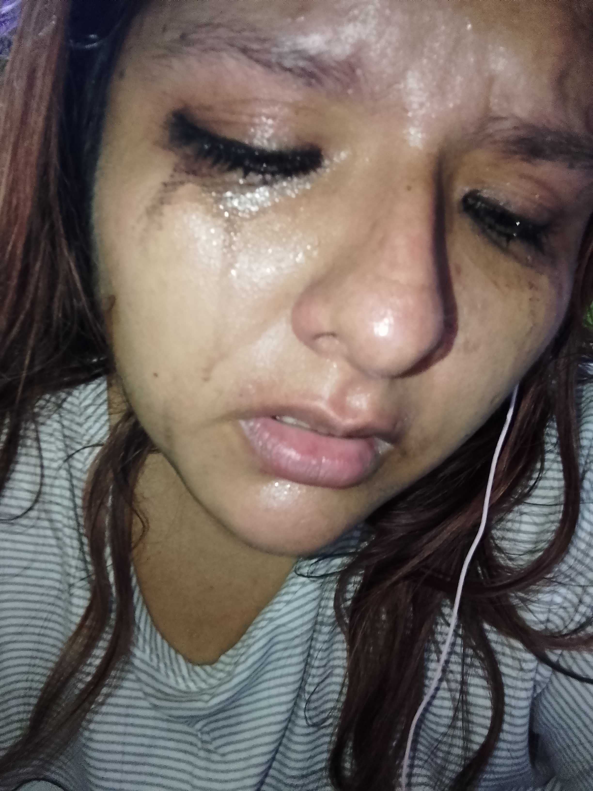 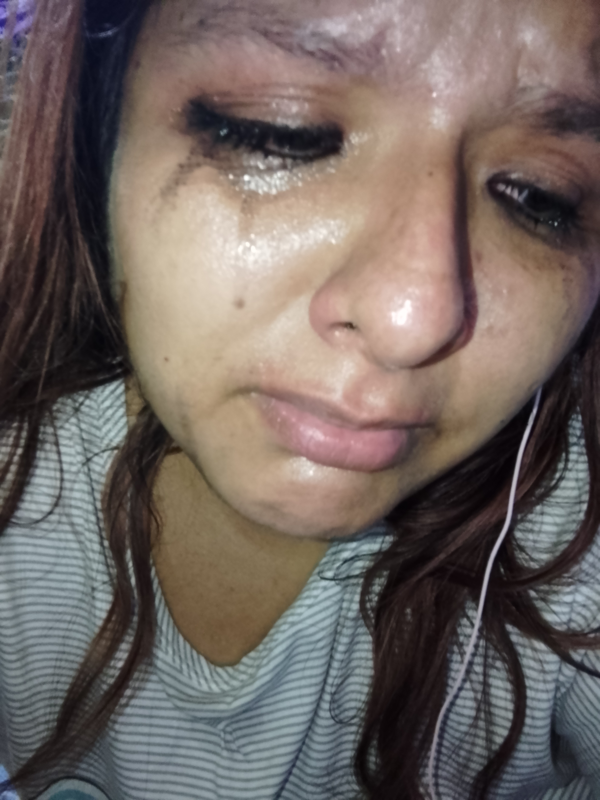 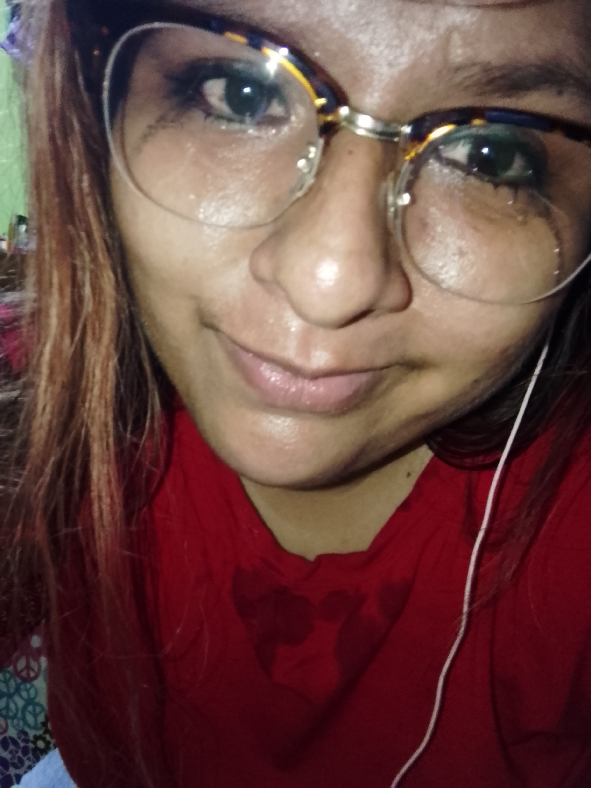 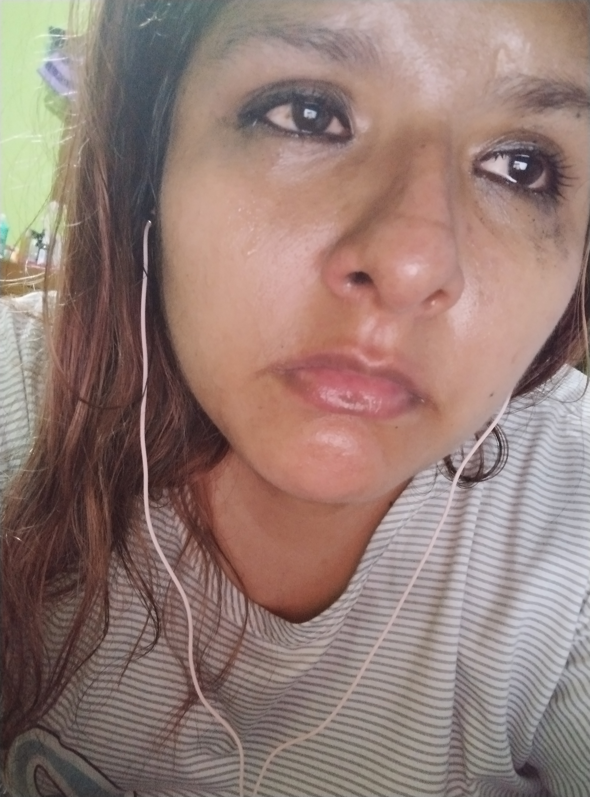
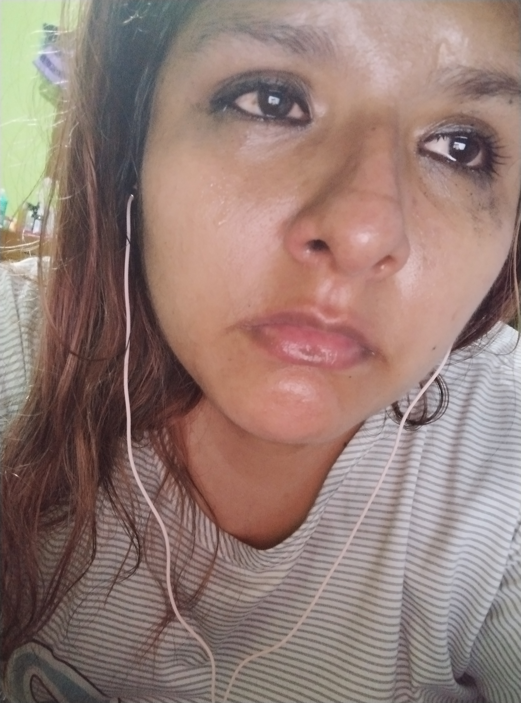


 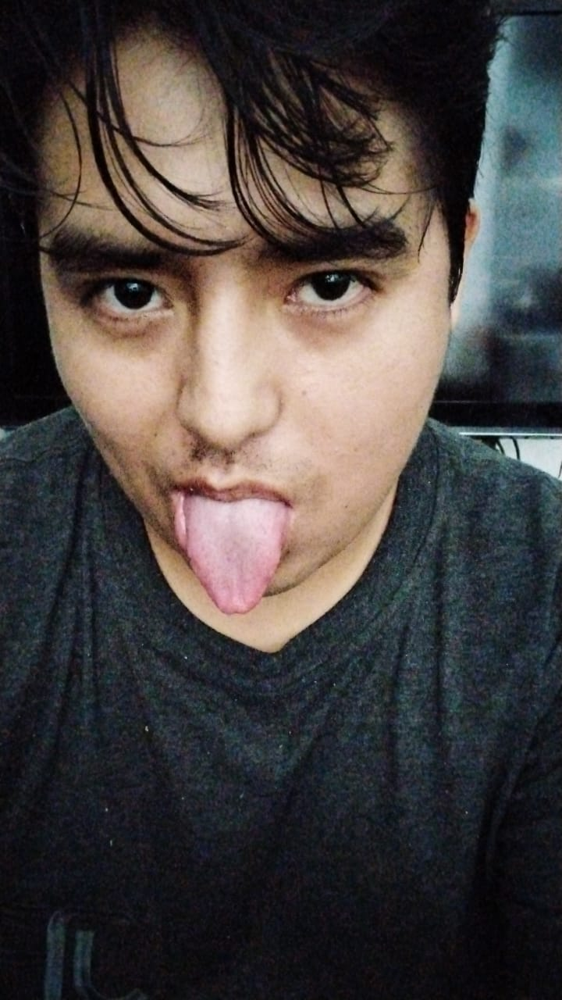
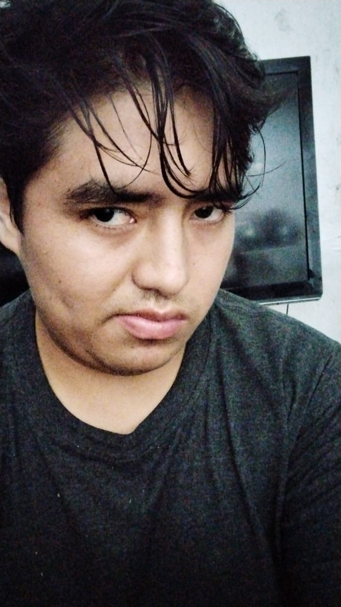
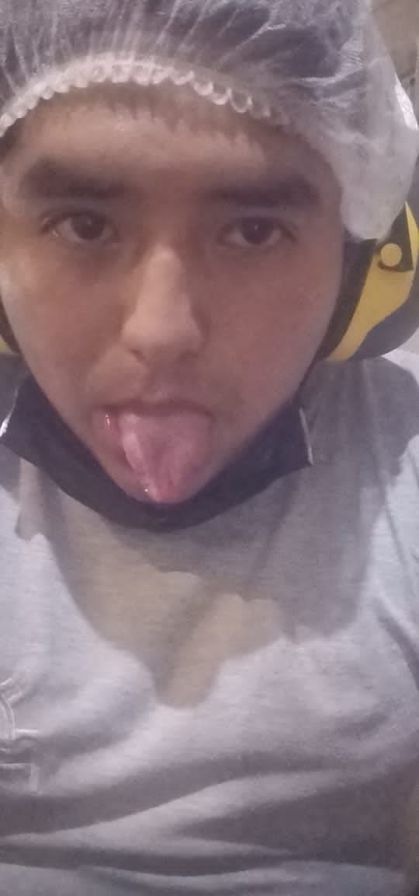
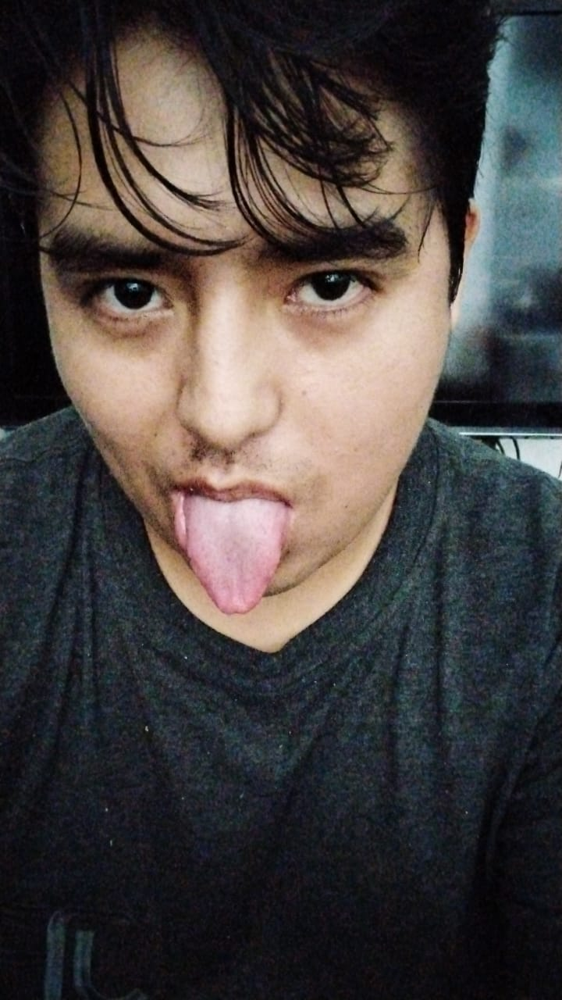
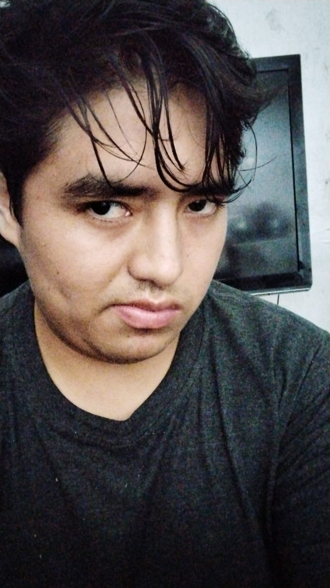
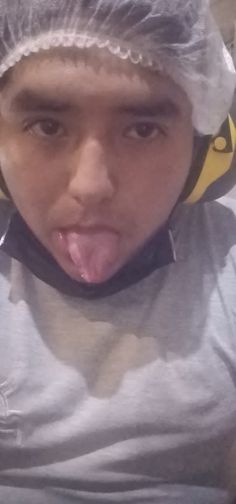